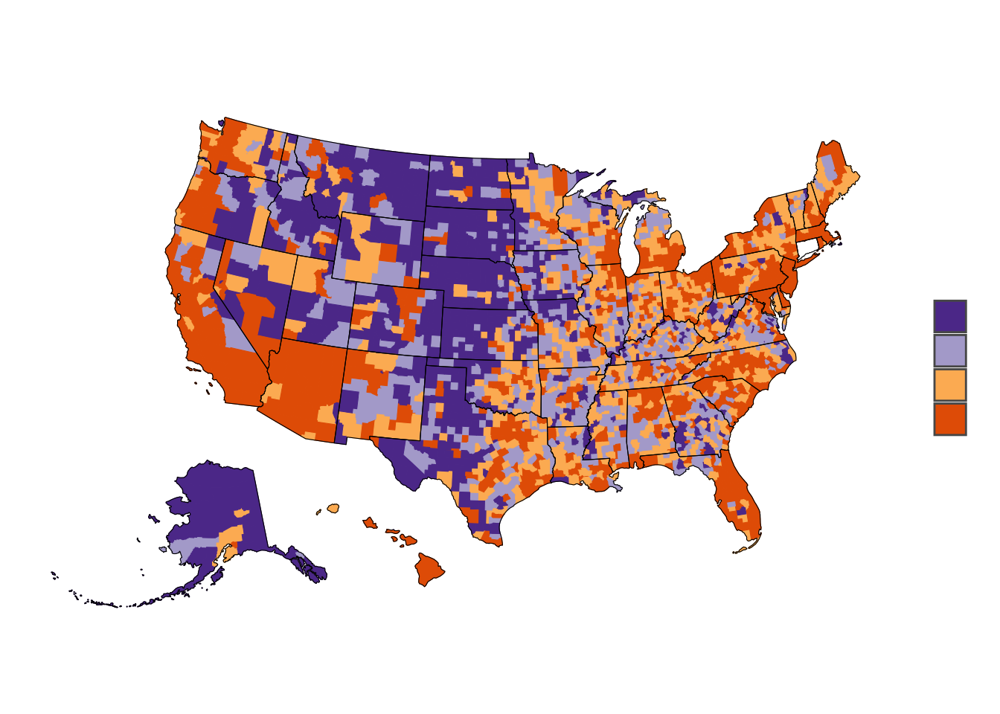
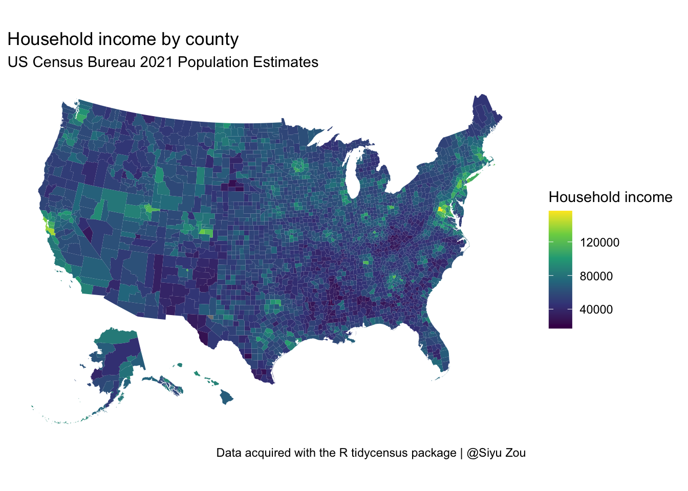
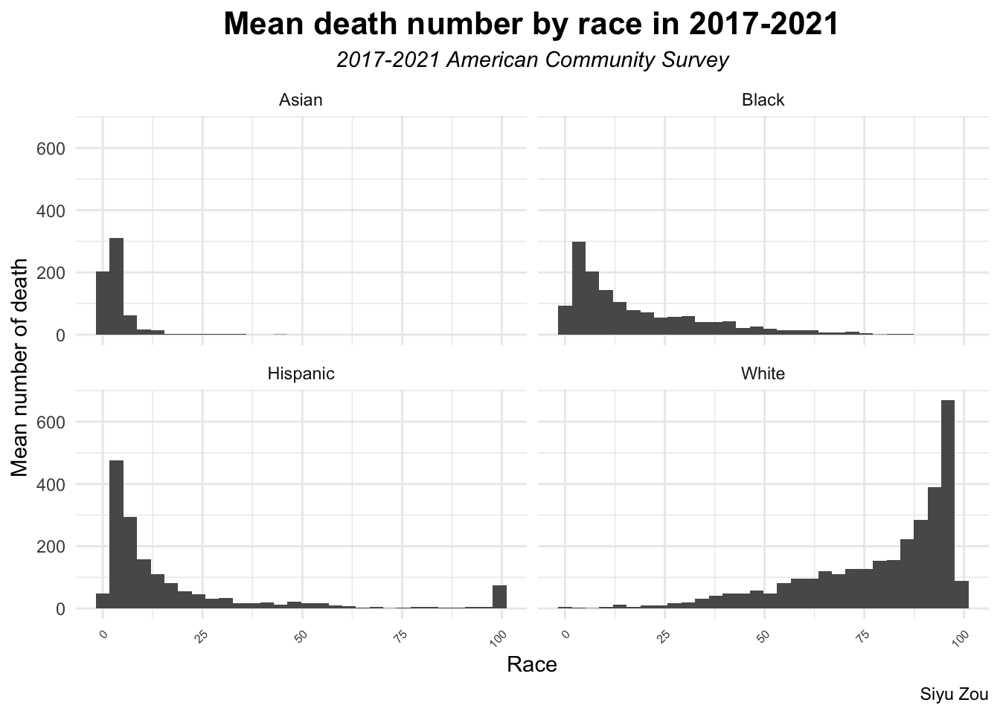
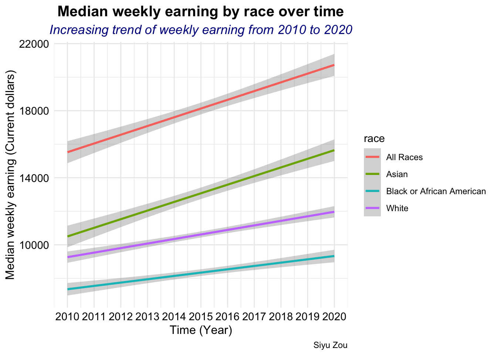
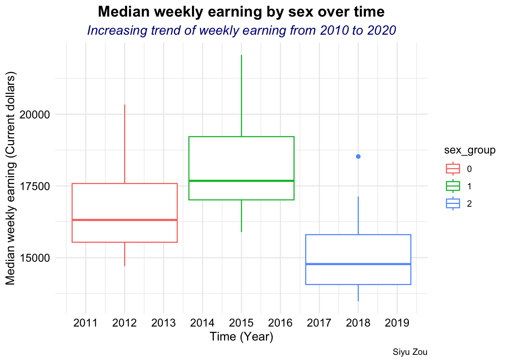
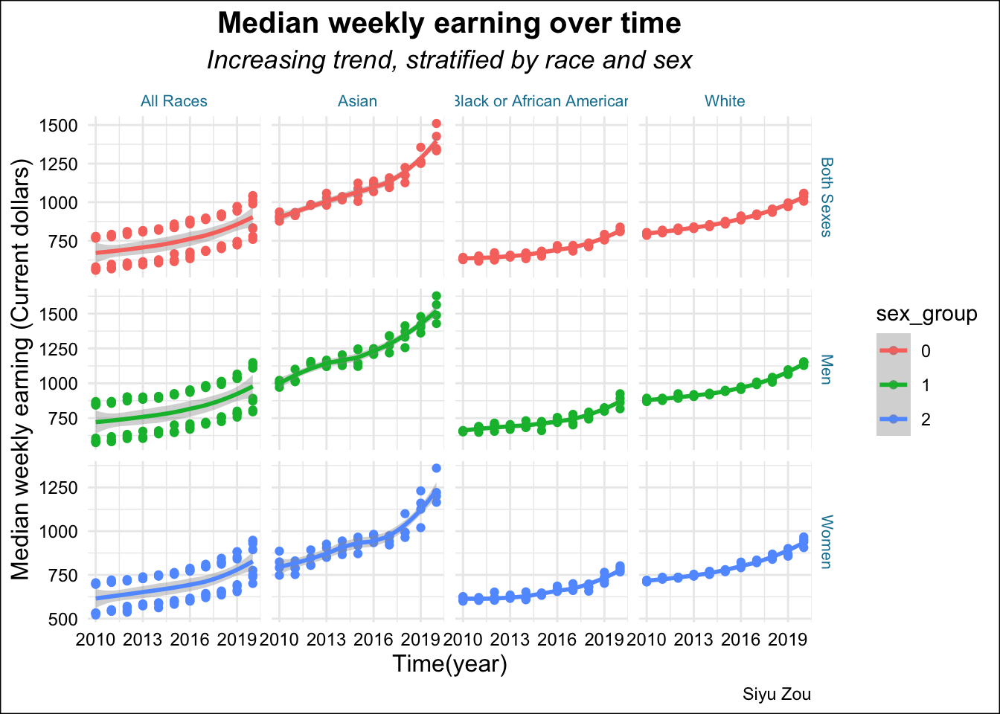

# tests if a directory named "data" exists locally
if (!dir.exists(here("data"))) {
dir.create(here("data"))
}
if (!file.exists(here("data", "US_death.RDS"))) {
US_death <- get_estimates(geography = "county",
variables = "DEATHS",
year = 2021,
geometry = TRUE,
resolution = "20m") %>%
shift_geometry()
# save the files to RDS objects
saveRDS(US_death, file = here("data", "US_death.RDS"))
}
if (!file.exists(here("data", "US_income.RDS"))) {
US_income <- get_acs(geography = "county", variables = "B19013_001",
shift_geo = TRUE, geometry = TRUE)
saveRDS(US_income, file = here("data", "US_income.RDS"))
}
vars10 <- c("P005003", "P005004", "P005006", "P004003")
if (!file.exists(here("data", "ethnic_il.RDS"))) {
ethnic_il <- get_decennial(geography = "county", year = 2010,
summary_var = "P001001", variables = vars10, geometry = T)
saveRDS(ethnic_il, file = here("data", "ethnic_il.RDS"))
}Example Analysis
R
API
Analysis examples, practice using APIs and making data visualizations.
1. Research Question
Based on the US Census Bureau’s data retrieved from APIs, - Estimate the death rate per 1000 residents in US 2021 - The household income distribution by different country in US
Original Data
- Data was downloaded by using tidycensus, an R package that allows users to interface with a select number of the US Census Bureau’s data APIs and return tidyverse-ready data frames.
Data Dictionary
- Here is a data dictionary for what all the column names mean: data dictionary
Download data
Data wrangling
US_death <- readRDS(here("data", "US_death.RDS"))
US_income <- readRDS(here("data", "US_income.RDS"))
ethnic_il <- readRDS(here("data", "ethnic_il.RDS"))
sum_il <- ethnic_il |>
separate(NAME, c("country", "state"), sep = ",") |>
group_by(state, country) |>
nest() |>
mutate(
data = map(data, ~ {
.x$value <- as.numeric(.x$value)
.x$summary_value <- as.numeric(.x$summary_value)
.x$pct <- 100 * (.x$value / .x$summary_value)
return(.x)
})
) |>
unnest(cols = c(data))
sum_US_death <- US_death |>
separate(NAME, c("country", "state"), sep = "," ) |>
group_by(state) |>
nest() |>
mutate(
stats = map(.x = data, .f = ~tibble(
death_minimum = min(.x$value),
death_maximum = max(.x$value),
death_mean = mean(.x$value)
))
) |>
select(-data) |>
unnest(stats)Plot 1 Death by county
order = c("Q1:<157", "Q2:157 to 361", "Q3:361 to 865", "Q4:865 and up")
US_death <- US_death %>%
mutate(groups = case_when(
value > 865 ~ "Q4:865 and up",
value > 361 ~ "Q3:361 to 865",
value > 157 ~ "Q2:157 to 361",
TRUE ~ "Q1:<157"
)) %>%
mutate(groups = factor(groups, levels = order))
state_overlay <- states(
cb = TRUE,
resolution = "20m"
) %>%
filter(GEOID != "72") %>%
shift_geometry()Retrieving data for the year 2021
|
| | 0%
|
|====== | 9%
|
|============ | 17%
|
|================== | 26%
|
|======================== | 35%
|
|=============================== | 44%
|
|===================================== | 52%
|
|=========================================== | 61%
|
|================================================= | 70%
|
|======================================================= | 79%
|
|============================================================= | 87%
|
|======================================================================| 100%ggplot() +
geom_sf(data = US_death, aes(fill = groups, color = groups), size = 0.1) +
geom_sf(data = state_overlay, fill = NA, color = "black", size = 0.1) +
scale_fill_brewer(palette = "PuOr", direction = -1) +
scale_color_brewer(palette = "PuOr", direction = -1, guide = FALSE) +
coord_sf(datum = NA) +
theme_minimal(base_family = "Roboto") +
labs(title = "Death per 1000 residents by county",
subtitle = "US Census Bureau 2021 Population Estimates",
fill = "Rate",
caption = "Data acquired with the R tidycensus package | @Siyu Zou")
Plot 2
ggplot(US_income) +
geom_sf(aes(fill = estimate), color = NA) +
coord_sf(datum = NA) +
theme_minimal() +
scale_fill_viridis_c() +
labs(title = "Household income by county",
subtitle = "US Census Bureau 2021 Population Estimates",
fill = "Household income",
caption = "Data acquired with the R tidycensus package | @Siyu Zou")
Plot 3
sum_il %>%
filter( value > 1000 ) %>%
mutate(race = case_when (variable == "P005003" ~ "White",
variable == "P005004" ~ "Black",
variable == "P005006" ~ "Asian",
variable == "P004003" ~ "Hispanic")
) %>%
ggplot(aes(pct)) +
geom_histogram() +
facet_wrap(~race) +
labs(title = "Mean death number by race in 2017-2021",
subtitle = "2017-2021 American Community Survey",
y = "Mean number of death",
x = "Race",
caption = "Siyu Zou") +
theme_minimal() +
theme(
axis.text.x = element_text(angle = 45, hjust = 1, size = 6),
plot.title = element_text(size = 16, face = "bold",hjust = 0.5),
plot.subtitle = element_text(size = 11, face = "italic" ,hjust = 0.5)
)
Function used
dplyr:mutate, filter, group_by, select tidyr: separate, nest ggplot2:geom_sf, geom_point, geom_errorbar
2. Research Question
Based on the U.S. BUREAU OF LABOR STATISTICS (“CPS Tables : U.s. Bureau of Labor Statistics” n.d.): Which race and sex group earn the most of money every week? What’s the trend of the earning over the last 10 years?
Audience
People who are interested in the labor force and weekly median earnings by race/gender/age group over time in America.(“Technical Documentation (CPS) : U.s. Bureau of Labor Statistics” n.d.)
Original data
Data comes from TidyTuesday, which is a weekly podcast and global community activity brought to you by the R4DS Online Learning Community. Archive of datasets from the 2021 series of TidyTuesday events
library("tidytuesdayR")
library("here")
library("tidyverse")In this project, one datasets comes from TidyTuesday would be used. Specifically, we will use the following data from February 23th 2021. To access the data, you need to install the tidytuesdayR R package and use the function tt_load() with the date of ‘2021-02-23’ to load the data.
# tests if a directory named "data" exists locally
if (!dir.exists(here("data"))) {
dir.create(here("data"))
}
if (!file.exists(here("data", "tuesdata_earn.RDS"))) {
tuesdata <- tidytuesdayR::tt_load("2021-02-23")
earn <- tuesdata$earn
employed <- tuesdata$employed
# save the files to RDS objects
saveRDS(tuesdata$earn, file = here("data", "tuesdata_earn.RDS"))
saveRDS(tuesdata$employed, file = here("data", "tuesdata_employed.RDS"))
}
earn <- readRDS(here("data", "tuesdata_earn.RDS"))data dictionary
Here is a data dictionary for what all the column names mean: data dictionary
data wrangling
Note
Note that this data weangling used 5 functions from dplyr, including: select, mutate,filter,summarise,arrange
glimpse(earn)Rows: 4,224
Columns: 8
$ sex <chr> "Both Sexes", "Both Sexes", "Both Sexes", "Both Sex…
$ race <chr> "All Races", "All Races", "All Races", "All Races",…
$ ethnic_origin <chr> "All Origins", "All Origins", "All Origins", "All O…
$ age <chr> "16 years and over", "16 years and over", "16 years…
$ year <dbl> 2010, 2010, 2010, 2010, 2011, 2011, 2011, 2011, 201…
$ quarter <dbl> 1, 2, 3, 4, 1, 2, 3, 4, 1, 2, 3, 4, 1, 2, 3, 4, 1, …
$ n_persons <dbl> 96821000, 99798000, 101385000, 100120000, 98329000,…
$ median_weekly_earn <dbl> 754, 740, 740, 752, 755, 753, 753, 764, 769, 771, 7…earn_clean <- earn %>%
select(sex, race, age, year, median_weekly_earn) %>%
mutate(
age_group = case_when( age == "16 to 24 years" ~ 1 ,
age == "25 to 54 years" ~ 2 ,
age == "55 years and over" ~ 3 ,
),
sex_group = factor(sex, levels = c("Both Sexes", "Men", "Women") , labels = c(0, 1, 2))
) %>%
filter(age_group == 2 ) %>%
mutate(Race_group = factor(race, levels = c("All Races", "Asian", "Black or African American","White") , labels = c(0, 1, 2, 3) ))
adults_earn_race <- earn_clean %>%
group_by( race, year) %>%
summarise(
year_earn = sum(median_weekly_earn)
) %>%
arrange(year, .by_group = TRUE)
adults_earn_sex <- earn_clean %>%
group_by( sex_group, year) %>%
summarise(
year_earn = sum(median_weekly_earn)
) %>%
arrange(desc(year), .by_group = TRUE)
three plots
There are three plots to show the median weekly earning over time, stratified by race and sex.
adults_earn_race %>%
ggplot( aes(year, year_earn, color = race)) +
geom_smooth(stat = "smooth", position = "identity", method = "lm") +
labs(
title = "Median weekly earning by race over time",
subtitle = "Increasing trend of weekly earning from 2010 to 2020",
caption = "Siyu Zou",
y = "Median weekly earning (Current dollars)",
x = "Time (Year)"
) +
scale_x_continuous(breaks = seq(2010, 2020, 1), labels = seq(2010, 2020, 1) ) +
theme_minimal() +
theme(
plot.title = element_text(hjust = 0.5, face = "bold", size = 15),
plot.subtitle = element_text(hjust = 0.5, color = "darkblue", face = "italic", size = 13),
axis.title = element_text(color = "black", size = 12),
axis.text = element_text(color = "black", size = 11)
)`geom_smooth()` using formula = 'y ~ x'
adults_earn_sex %>%
ggplot( aes(year, year_earn, color = sex_group)) +
geom_boxplot(stat = "boxplot", position = "dodge2" ) +
labs(
title = "Median weekly earning by sex over time",
subtitle = "Increasing trend of weekly earning from 2010 to 2020",
caption = "Siyu Zou",
y = "Median weekly earning (Current dollars)",
x = "Time (Year)"
) +
scale_x_continuous(breaks = seq(2010, 2020, 1), labels = seq(2010, 2020, 1) ) +
theme_minimal() +
theme(
plot.title = element_text(hjust = 0.5, face = "bold", size = 15),
plot.subtitle = element_text(hjust = 0.5, color = "darkblue", face = "italic", size = 13),
axis.title = element_text(color = "black", size = 12),
axis.text = element_text(color = "black", size = 11)
)
earn_clean %>%
ggplot(aes(year, median_weekly_earn, color = sex_group)) +
geom_point( ) +
geom_smooth(method = 'loess') +
facet_grid( sex ~ race , scales = "free") +
labs(
title = "Median weekly earning over time",
subtitle = "Increasing trend, stratified by race and sex",
x = "Time(year)",
y = "Median weekly earning (Current dollars)",
caption = "Siyu Zou"
) +
scale_x_continuous(breaks = seq(2010, 2020, 3), labels = seq(2010, 2020, 3) ) +
theme_minimal() +
theme(
strip.text = element_text(color = "#1380A1" , size = 8),
strip.background = element_rect(fill = "white", color = "white", linewidth = 1 ),
plot.title = element_text(hjust = 0.5, color = "black", face = "bold", size = 15) ,
plot.subtitle = element_text(hjust = 0.5, color = "black", face = "italic", size = 13) ,
plot.background = element_rect(fill = "white" ),
# panel.grid.major = element_line(color = "white", linewidth = 0.5),
# panel.grid.minor = element_line(color = "white"),
axis.title = element_text(color = "black",size = 12),
axis.text = element_text(color = "black", size = 9)
)`geom_smooth()` using formula = 'y ~ x'
Include one image or table
(not one created by myself, but one I have saved locally or one from the web)
A image from the U.S. Bureau of Labor Statistics (BLS)
Provided an overview of Blacks in the labor force from 1976 to projected 2016-26. Aging labor force, lower participation rates (Toossi n.d.)

The Black share of the labor force by age group continues to shift. The labor force share of Blacks ages 55 and older was larger in 2016, and is projected to be larger in 2026, than that of the 16- to 24-year-old group.
Summarize
Which race and sex group earn the most of money every week? Based on the U.S. Bureau of Labor Statistics (BLS) projects, in the past 10 years, all race groups’ weekly earning were increasing.
Specially, Asian had the highest median weekly earning from 2010 to 2020. Black or African American had the lowest median weekly earning from 2010 to 2020. Compared to women, men had higher median weekly earning. In total, Asian men had the highest median weekly earning, Black or African American women had the lowest median weekly earning over the 10 years.
list out functions
dplyr: mutate, select, filter, summarise, arrange
ggplot2: geom_smooth, geom_boxplot, geom_point
References
Toossi, Emily Rolen {and} Mitra. n.d. “Blacks in the Labor Force : Career Outlook: U.s. Bureau of Labor Statistics.” Accessed October 31, 2023. https://www.bls.gov/careeroutlook/2018/article/blacks-in-the-labor-force.htm.